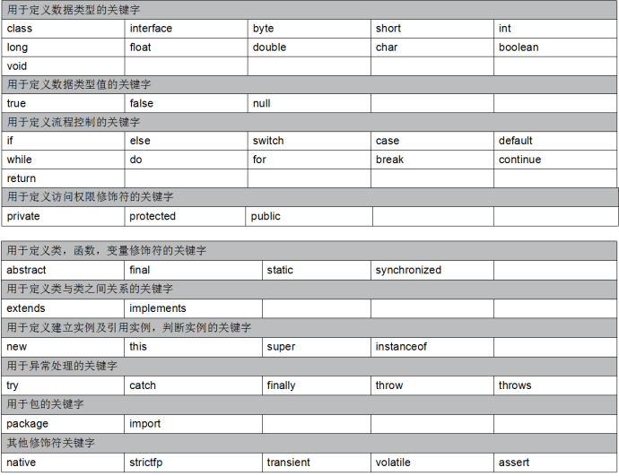
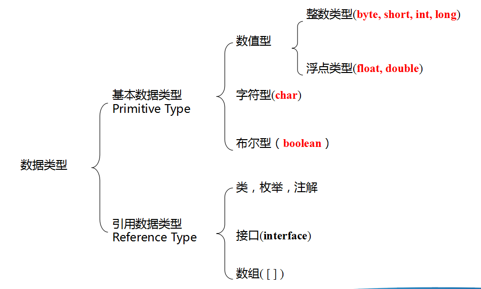

java基础
1、java概述：
一门完全面向对象的计算机语言
2、java之父：詹姆斯·高斯林
3、特性：
简单性：相对于C语言来说，抛弃了C语言难以理解且无用的操作，java中存在GC垃圾
回收机制，程序运行结束自动释放回收资源。
面向对象：java编程以对象为基本执行单位
可移植性（跨平台）：一处编译多处运行
Java编写的代码可以在任意的平台上运行
基于java虚拟机jvm
运行java的环节中包含jvm java虚拟机 java代码最终运行在虚拟机上
无论什么系统只要安装java运行环节 那么就可以运行java代码
分布式：将一个系统某个需要大量访问的模块进行复制
多线程：java可以提供多线程编程，可以同时运行多个代码
动态性：java工具可以动态添加
健壮性：1、代码编译阶段
健全的代码格式检验机制
在代码书写结束后，进行编译时进行代码格式与语法的检查
并给予响应的错误
2、代码运行阶段
代码运行过程中进行异常
安全性：java代码经过书写编译后执行编译后的class文件
JDK JRE JVM
Jdk:java开发工具包 包含java开发工具命令 与 jre
Jre：java运行环节 包含java运行所需要的基本工具包 与 jvm
Jvm：java虚拟机用于运行编译好的java代码 是java跨平台的保障
Jdk包含jre包含jvm
简单的Dos命令
Dos命令不区分大小写
切换盘符 盘符名： d:
查看文件 dir
进入指定文件夹 cd 文件名 cd java
创建文件夹 mkdir 文件名
创建文件并输入内容 copy con 文件名.后缀 内容 f6后回车退出
JAVA注释
用于在程序中对书写代码提供解释与标志作用的文本，不会被java虚拟机所编译也不会编译入class
1、用于代码的理解与查看
2、用于缓解程序员开发过程中空虚寂寞冷的心情
分类：
1、单行注释
以//开始注释本行内容
2、多行注释
以/*开始 */结束注释中间包含的所有内容
3、文档（文本）注释
以/** 开始 */解结束与多行注释相似
书写属性用于标志
当前类的作者、书写日期、方法参数、功能。。。。。。
可以通过javadoc命令生成文档上
Java中的关键字
关键字：java开发过程中已经赋予了一些单词特定的含义与功能，这些单词统一称之为java关键字
注意：关键字为单个单词且全部由小写字母组成
Java关键字一共有53个分为两类：
1、已有特定功能与含义在开发过程中可以直接使用其功能的关键字51个
2、当前还没有赋予特殊功能与含义在未来可能赋予称之为保留字2个

JAVA标识符
就是给类,接口,方法,变量等起名字时使用的字符序列组成规则
在java开发过程中所有我们命名的名字称之为java标识符
Java标识符的组成：
字母、数字、下划线_、美元符号$组成
限制：
不能以数字开头
不能以关键字命名（但是可以使用关键字组合命名）
严格区分大小写
命名约束：
1、包的命名
包之间以.分割
通常以倒置域名进行命名 baidu.com=>com.baidu
后跟包存放代码功能 com.yunhe.
通常全名小写
2、类的命名
首字母大写
3、方法的命名
首字母小写
4、变量的命名
首字母小写 严格区分大小写
1、常量的命名
要求全部为大写字母组成且通常为单个单词命名
Java命名规范
1、见名知意 根据名字可以简单得到类、方法、变量。。。。的用处与功能
2、驼峰命名法 当标识符由多个单词组成时 除首字母安装其原本要求书写外 其余单词首字母大写
Java常量
在程序运行过程中不会进行改变的量称之为常量
常量池
保存java中基本数据类型的相应数据 不允许修改 使用时直接从常量池获取
Java变量
在程序运行过程中可以在一定范围内进行改变的量称之为变量
在程序存空间中开辟内存空间进行数据的存储于操作。进行修改时就是将空间中保存指定数据的位置进行修改

//变量声明创建格式
//1、声明 数据类型 变量名;
//2、创建并赋值 变量名 =值;
//通常将声明创建初始化赋值一同进行
//数据类型 变量名=初始值；
变量命名在当前作用域内不能重名且严格区分大小写
作用域：当前代码中变量可以使用的范围 {}之间
局部变量与全局变量
局部变量：
不是声明在类体括号里面的变量；
局部变量使用前必须初始化值;
局部变量没有默认初始化值;
局部变量的作用域是从定义开始到定义它的代码块结束;
（声明在方法中的变量）只有在当前当前方法中可以使用
成员变量:
在方法体外,类体内声明的变量，又称字段(Field)或全局变量；
成员变量的作用域是整个类中;
（声明在类体里的变量）
Java数据类型
Java数据类型分为两类：
基本数据类型 引用数据类型（面向对象之后进行学习）
基本数据类型分为四类八种
整数型 （byte short int long ） 用于保存整数数据
浮点型（小数型）（float double）用于保存小数数据
字符型（char） 用于保存单个字符
布尔型（boolean） 用于保存true 与 false

1// 整数类型2byte b = 127; // 1个字节 8位3short s = 1;// 2个字节 16位4int i = 1; // 4个字节 32位5long l = 1l; // 8个字节 64位 6//在java中整数类型默认为int 如果需要定义long类型数据7//在数据后加L或l8//小数类型9float f=1.4f;10double d =1.4;11//在java中小数类型默认为double 需要定义floatle类型数据12//在数据后加F或f13//字符型14char c='b';15//字符型只能存储单个字符并用''包含16//布尔型17boolean bool=true;18//布尔型时常量 只能赋值true或者false19//引用数据类型String 用于保存字符串20String str="字符串";Java数据间的数据类型转换
1、自动类型转换
小的向大的进行转换
byte,short,char—int—long—float—double
byte,short,char相互之间补转换，他们参与运算首先转换为int类型
有计算机自行进行转换操作 无需代码
通常用于数值型数据变量的相互转换
2、强制类型转换
大的向小的进行转换
可能造成数据丢失
保存转换后数据的变量数据类型 保存转换后数据的变量=（保存转换后数据的变量数据类型） 要转换的数据
float f=(float) 12.22;
//要转换的数据类型 变量名 =（要转换的数据类型） 数据
Char强转为int时 时根据ASCII（阿斯科码表）进行对比转换

Java运算符
1、算术运算符
+ - * / % ++ --
在java中数值分为整数与小数有些运算符针对整数与小数返回不同的计算结果
/进行整数运算时 就变成了取整运算符
%进行小数运算时 返回相应数据小数类型
++自增运算符
--自减运算符
放在变量前 先进行自增自减运算 后进行操作
放在变量后 先进行取值操作后进行自增自减运算
（自增运算符与自减运算符放在变量前后运算结果的不同）
2、赋值运算符
= , +=, -=, *=, /=, %=
赋值运算符为 =与不同的算术运算符进行组合得来的 将运算结果进行赋值操作
a+=b => a=a+b;
a-=b =>a=a-b
3、关系运算符
经常用于判断两数值之间的关系 返回结果为boolean类型 不要与赋值运算符的=混淆
== ！= > < >= <=
4、逻辑运算符
用于判断两关系运算符或两boolean的逻辑关系
&当左右两边都为true时返回true（存假便为假）
| 当左右两边都为false时返回false（存真便为真）
! 原为真则返回假 原为假则返回真
^ 两左右两边为不同时 返回true 相同返回false
&&与&用法相同 || 与|用法相同
短路与 与 短路或 短路的是运算符右边的算式（左边的值已经可以决定结果值 将右边等式短路）
逻辑表达式运算时会将内部运算先算出结果 短路运算时先将一边的结果运算出来进行结果判断之后再决定是否将右边表达式进行运算

5、三目运算符（三元表达式）
(关系表达式)?表达式1：表达式2；
当关系表达式返回true时 三目运算符返回表达式1的结果
当关系表达式返回false时 三目运算符返回表达式2的结果
根据？前的关系表达式 返回true执行：前表达式 返回false执行：后的表达式
xxxxxxxxxx61//三目运算符2//比较两个数中比较大的值并返回3System.out.println("a="+a);4System.out.println("b="+b);5int max=(a>b)?a:b;6System.out.println(max);Java流程控制语句
在java中所有程序的执行都基于流程控制语句
顺序流程控制语句
程序执行由上至下由左至右 按条执行
一条java语句的结束由;决定
在每一条语句书写结束后必须以;结束
选择流程控制语句
选择结构有特定的语法规则，代码要执行具体的逻辑运算进行判断，逻辑运算的结果有两个，所以产生选择，按照不同的选择执行不同的代码。
(1) 单分支
当代码顺序执行至分支语句进行逻辑判断 判断布尔表达式中返回的值 为true则执行相应语句块的代码
语法: if(布尔表达式){语句块}

(2) 双分支
当代码顺序执行至分支语句进行逻辑判断 根据返回的值true执行语句块1 false执行语句2
语法：if(布尔表达式){语句块1}else{语句块2}

(3) 多分支
当代码顺序执行至分支语句进行逻辑判断 根据返回的值true执行语句块1 false 继续判断布尔表达式2 返回true执行语句2 否则继续判断。。。。。。。
语法：if(布尔表达式1){语句块1}else if(布尔表达式2){语句块2}..........else{语句块3}
循环流程控制语句

三目运算符可以转化为流程控制语句，但是流程控制语句不一定可以转化为三目运算符，因为运算符运算需要返回结果。
三目运算符与流程控制语句区别：
运行效率：再涉及到运算操作时三目运算符效率略高，但如果只是进行true false判断进行结果的执行 流程控制语句效率高(三目运算符是运算必须返回结果后才能使用)
语法：三目运算符语法上相比if简单但是如果涉及到复杂判断三目运算符难以理解
switch case分支语句
与if eclse分支语句不同的是 switch是通过数据匹配的形式进行分支操作
switch语句语法：
switch(变量) {
case 值1：
语句体1;
break;
case 值2：
语句体2;
break;
…
default：
语句体n+1;
break;
}

程序运行过程中为相应变量动态赋值，在case中对具体值与变量值进行数据匹配，匹配通过执行相应的语句体 否则若全部匹配项匹配失败执行default中的语句体 break执行完当前语句体后直接退出匹配
相当于每次case用变量与case指定的值进行==判断如果返回true 执行相应case下语句块
break理解：执行代码块后结束其他匹配操作（结束其他switch中代码的运行）
Switch代码的执行与case无关，代码块的执行取决于boolean类型中间变量默认为false；
当case代码匹配之后将boolean值改为true ，当执行到相应可执行代码块，进行判断，判断boolean类型的值为true则执行代码块 否则不执行(只有case匹配时会将boolean类型的值赋值为true )
If与switch使用场景
当进行大范围的数据判断操作使用if
当进行指定数据并且数据较少的时候使用switch
注意事项
case后面只能是常量，不能是变量，而且，多个case后面的值不能出现相同的
default可以省略吗?
可以省略。一般不建议。除非判断的值是固定的。(单选题)
break可以省略吗?
可以省略，一般不建议。否则结果可能不是你想要的
default的位置一定要在最后吗?
可以出现在switch语句任意位置。
switch语句的结束条件
遇到break
执行到程序的末尾
Scanner扫描器类
xxxxxxxxxx211// Scanner扫描器类2 Scanner sc = new Scanner(System.in);3 // 数据类型 变量名 =new 数据类型（参数）4 // 声明一个名为sc的扫描器对象5 // 创建一个新的扫描器对象扫描控制台输入的内容并赋值给名为sc的变量6 // String name = sc.nextLine();7 // String字符串类 用于保存字符串8 // sc.nextLine()获取下一行输入内容并返回9 // System.out.println(name+"你好帅");10 // scanner程序员前期进行数据输入的工具类11 // 使用控制台模拟数据交互功能12 // 使用scanner模拟用户登录功能13 System.out.println("请输入账号");14 String username = sc.nextLine();15 System.out.println("请输入密码");16 String password = sc.nextLine();17 if (username.equals("admin") && password.equals("admin")) {18 System.out.println("登录成功");19 } else {20 System.out.println("登录失败");21 }Random随机数类
xxxxxxxxxx151// import导入 导入其他包中的类 并进行使用2 Random r = new Random();3 //随机数类4 //创建随机数对象5 6 //在现实世界中不存在真正的随机数 7 //伪随机数-》通过计算或公式生成的数8 9 int number = r.nextInt(10);//随机生成一个整数[0~10)之间的整数10 // System.out.println(number);11 //随机生成七选三 12 int a=r.nextInt(7)+1;13 int b=r.nextInt(7)+1;14 int c=r.nextInt(7)+1;15 System.out.println("你选择的号码为："+a+b+c);Java流程控制语句
循环流程控制语句
重复性的执行一段相同的代码
循环语句可以在满足循环条件的情况下，反复执行某一段代码，这段被重复执行的代码被称为循环体语句，当反复执行这个循环体时，需要在合适的时候把循环判断条件修改为false，从而结束循环，否则循环将一直执行下去，形成死循环。
初始化语句：
一条或者多条语句，这些语句完成一些初始化操作。
判断条件语句：
这是一个boolean 表达式，这个表达式循环体。能决定是否执行
循环体语句：
这个部分是循环体语句，也就是我们要多次做的事情。
控制条件语句：
这个部分在一次循环体语句结束后，下一次循环判断条件执行前执行。通过用于控制循环条件中的变量，使得循环在合适的时候结束。
按照语法划分分为三种
1、While
while循环语句格式：
基本格式
while(判断条件语句) {
循环体语句;
}
xxxxxxxxxx151//while循环2 //语法:while(布尔表达式){循环体语句}3 //if(布尔表达式){语句块}4 //当使用while进行循环操作时一般使用拓展语法5 //1、初始化语句6 int i=1;7 //2、循环执行条件判断语句8 //只有返回true才会执行循环体语句9 while(i<=5){10 //3、循环体语句11 System.out.println("hello World!");12 //4、迭代语句13 //用于在每次循环结束后修改循环条件中的变量14 i=i+1;//i++15 }2、do...while
do…while循环语句格式：
基本格式
do {
循环体语句;
}while(判断条件语句);
3、For
for循环语句格式：
for(初始化语句;判断条件语句;控制条件语句) {
循环体语句;
}
For循环语法集初始化语句、条件判断语句、迭代语句、循环语句与语法本身
while、do..while、for循环的区别
While与do...while区别：
while先进行判断操作后进行循环体语句的执行，do...while先进行循环体语句的执行后再进行条件的判断（while循环的循环体语句可能一次都不会执行，但是do...while循环体语句至少被执行一次）
While与for的区别：
for语法将初始化语句集成，使其作用范围在当前循环中，在循环结束后释放资源，且将迭代语句一同放入语法中使{}中只保留循环体语句减少代码的混淆
While与do...while使用场景：
当需要进行条件判断后才会执行的语句时使用while，当进行无论条件是否成功都会首先执行一次的操作时使用do...while
While与for使用场景：
for循环适合针对一个范围判断进行操作，对于已知次数的循环(输出10次固定语句)
while循环适合判断次数不明确操作，未知次数的循环(检票)
x1// 使用for循环计算当前已过天数2 Scanner sc = new Scanner(System.in);3 System.out.println("请输入年");4 int year = sc.nextInt();5 System.out.println("请输入月");6 int month = sc.nextInt();7 System.out.println("请输入日");8 int day = sc.nextInt();9 int sumDay=0;//已过天数10 int TwoMonthDay=28;//二月天数11 if((year%4==0&&year%100!=0)||year%400==0){12 TwoMonthDay=29;}13 for(int i=1;i<month;i++){14 int monthDay=0;15 if(i==1||i==3||i==5||i==7||i==8||i==10||i==12){16 monthDay=31;17 }else if(i==2){18 monthDay=TwoMonthDay;19 }else{20 monthDay=30;21 }22 sumDay+=monthDay;23 }24 sumDay+=day;25 System.out.println(sumDay);2627//输出1000以内的水仙花数28 //水仙花数 各位3次方之和为本身的数29 //1、获取当前三位数各位数字12330 //(1)获取百位 对100取整31 //(2)获取十位 先对100取余在对10取整(先对10取整再对10取余)32 //(3)获取个位 先对100取余在对10取余(对10取余)33 for(int i=100;i<1000;i++){34 int hundredsPlace=i/100;//百位35 int tenPlace=i/10%10;//十位36 int onePlace=i%10;//个位37 if(hundredsPlace*hundredsPlace*hundredsPlace+tenPlace*tenPlace*tenPlace+onePlace*onePlace*onePlace==i){38 System.out.println(i);39 } 40 }java流程跳转语句
在java流程控制语句执行的过程中动态的对流程进行控制跳转的关键字
break:结束当前循环
xxxxxxxxxx571// break2 // 结束当前循环3 // 在循环输出100~999的过程中要求如果出现水仙花数4 // 则用水仙花数✿替换并结束循环5 for (int i = 100; i < 1000; i++) {6 int hundredsPlace = i / 100;// 百位7 int tenPlace = i / 10 % 10;// 十位8 int onePlace = i % 10;// 个位9 if (hundredsPlace * hundredsPlace * hundredsPlace + tenPlace * tenPlace * tenPlace10 + onePlace * onePlace * onePlace == i) {11 System.out.println("✿");12 break;13 } else {14 System.out.println(i);15 }16 17//continue跳过本次循环进入下次循环18 //输出1~100内的1~5019 int cCount=0;//保存continue执行次数20 for(int i=1;i<=100;i++){21 if(i==50){22 cCount++;23 continue;24 }25 System.out.print(i);26 }27 System.out.println();28 System.out.println(cCount);29 int bCount=0;//保存break执行次数30 for(int i=1;i<=100;i++){31 if(i==50){32 bCount++;33 break;34 }35 System.out.print(i);36 }37 System.out.println();38 System.out.println(bCount);39 40 41// return结束方法并返回42 //return为方法级别的结束43 //break return区别44 //break结束当前代码块 后续代码会继续运行45 //return结束当前方法 后续代码不会运行46 for (int i = 1; i <= 100; i++) {47 System.out.print(i);48 if (i == 50) {49 return;50 }51 }52 System.out.println();53 System.out.println("~~~~~~~~~~~~~~~~~");54 for (int i = 1; i <= 100; i++) {55 System.out.print(i);56 if (i == 50) {57 break;Java中方法的定义与使用
在程序书写过程中，以指定方法名书写并提供用于完成指定功能的数据、参数的代码块称之为方法
按照特定语法定义书写的包含一条或多条执行语句的代码块
在其他语言中也称之为函数、过程
方法由五部分组成：
Public static void main(String [] args){代码}
修饰符：用于修饰方法使方法具有某些”权限”
返回值类型：方法运行结束后返回的java中的数据类型 如果没有用void代替
(若方法定义时定义了非void 那么在代码块中必须使用return返回指定数据类型的数据)
方法名：自己定义的标识符 用于标识一个方法 通过方法名进行方法的查询与调用
参数列表：在方法调用时动态输入的数据(可以由0~无穷个变量组成)
代码块：方法执行过程中具体执行的代码
格式：
修饰符 返回值类型 方法名(参数类型 参数名1，参数类型 参数名2…) {
函数体;
return 返回值;
}
按照参数个数0或者其他个 有无返回值 方法分为四类：
无返回值 无参数的方法
用于那些固定功能。代码固定的方法定义(不建议定义此方法,不利于代码复用)
无返回值 有参数的方法
用于动态执行某些可以直接输出结果并展示的方法(可以定义但尽量减少，对于数据的使用不方便)
有返回值 无参数的方法
用于返回固定的数据（使用较少，与直接定义变量使用没有太大差别）
有返回值 有参数的方法
可以应用于大多数的方法定义（使用最多 最完善功能点全）
方法的定义根据实际需求进行动态的选择相应相对完善的方法
方法调用注意事项
方法不调用不执行
方法与方法是平级关系，不能嵌套定义
方法定义的时候参数之间用逗号隔开
方法调用的时候不用在传递数据类型
如果方法有明确的返回值，一定要有return带回一个值
方法的好处
1、 提高代码复用性、减少代码的冗余
（同一段代码可以通过方法名多次调用,减少在同一个作用域中重复代码出现的次数）
2、 便于代码的修改与维护、添加
（当代码出现问题时根据方法的功能定位出现错误的方法 对出现错误的方法进行直接修改）
在进行方法定义时一定对定义方法的功能进行细致划分，每个方法只执行本身一个功能不要出现一个方法处理多个功能
方法的返回值由相关参数进行运算得出的 但是返回值的数据类型不一定与参数一致
Java中方法定义与调用中的形参与实参
• 形参和实参的概念
• 形参：全称为“形式参数”，是在定义方法名和方法体的时候使用的参数，用于接收调用该方法时传入的实际值（参数列表声明的变量）
• 实参：全称为“实际参数”，是在调用方法时传递给该方法的实际值（具体的值）
• 注意
• 调用方法时给定的实际参数类型要与定义方法时形式参数类型相同，而且顺序也要相同
xxxxxxxxxx61//方法调用的过程2// 首先根据方法名、参数列表 定位找到要执行的方法3// 将我们书写调用方法时的实参传递给形参4// 将相应位置的值传递赋值给相应位置的变量5// 相当于在方法声明期间 声明多个变量但不进行赋值操作6// 当方法被调用时 需按照声明的变量顺序为变量赋值（若数据类型不匹配 方法不会执行）方法的重载
方法在相同作用域中可以重名吗？
可以，但是不允许完全相同的两个方法同时存在
方法调用是由jvm执行的将指定方法中代码块进行执行
Jvm虚拟机代调用方法时根据调用的方法名与参数列表动态觉定调用哪一个方法
方法定义过程中按照指定要求进行定义的两个同名方法称之为发生了方法的重载
在同一个类中，方法名相同，参数列表不同，那么我们称之为发生了方法的重载，或两个方法互为重载
对于方法的重载参数列表不同
1、 参数个数不同
2、 参数个数相同、数据类型不同
3、 参数个数相同(两个以上)、数据类型相同(两个以上)、顺序不同
方法重载与参数名（形参名）没有关系
虚拟机选择要执行的相应方法流程
1、 根据调用的方法名找到方法若指定方法只存在一个 进行执行将参数传入（可进行自动类型转换）
2、 若方法存在多个 使用参数列表每个参数的数据类型与顺序进行匹配 若实在找不到 继续查找是否存在通过参数自动类型转换后匹配的方法 进行调用
3、 最终根据方法名 与参数列表中参数的数据类型、顺序获得指定方法并赋值执行
java面向对象编程思想
什么是面向对象？
客观世界中具体存在的事物称之为对象、万物皆对象、可以用代码编写世间万物
面向过程编程思想
将要完成的功能需求，按照需求进行步骤划分，按照步骤一步一步完成，最后实现结果（这个活让我做，第一步干什么····最后完成）
面向对象编程思想
所有事物与功能需求都由一个或多个对象所提供的不同方法进行完成，由我们调用多个对象的不同方法进行完成（这个活让我做，我记得谁能干什么让他做一部分，另一个人能干什么让他做一部分···最后完成）
面向对象思想特点
是一种更符合我们的思想习惯的思想、可以将复杂的事情简单化、将我们从执行者变成指挥者。
注意：
因为面向对象的广泛性，面向对象编程遇到一个问题，对象太多，但具体执行的只有某一个对象，如果想要动态编程，需要引入类的概念。
一群对象的统称
在java编写代码过程中对对象的编写，对类的创建
面向对象本质就是面向过程只不过将每一步自己要执行的内容交由可以完成的对象去完成。
面向对象编程实际就是将方法书写在不同分类的类中，在其他包中或类中当需要使用时，可以创建对应的对象调用相应的方法进行功能的实现（代码梳理性更强、复用性更高、冗余更低）
类的创建
类与对象关系：
类是大量对象共性（属性、行为）的抽象
对象是类在现实中具体的表现
类是创建对象的模板
类的组成
1、 类的声明（声明一个类，类似于变量的声明，但与变量不同，类的声明可以直接使用）
2、 类体{}（包含类中内容）
a) 属性:用于描述这个类
属性的书写：就是java变量的书写
b) 行为:这个类可以做什么
行为的书写：就是java方法的书写
定义一个类的步骤
1、定义类名
2、编写类的属性
3、编写类的方法
xxxxxxxxxx141//学生类2public class Student {3 String name;// 姓名4 String schoole;// 学校5 int age;// 年龄67 //学习方法8 public static void study() {9 System.out.println("学习使我快乐");10 }11 //学习方法重载方法12 public static void study(int hours) {13 System.out.println("学习了" + hours + "小时");14 }类的使用
对象名.属性名 进行赋值与获取数据操作
对象名.方法名
Java面向对象编程
1、 将客观世界中的对象信息化（使用对象进行描述）
2、 Java中最基本的执行单位为对象，但是最基本的保存数据的为类
分析类的作用
1、 将指定方法放在指定类中，通过相应类的对象进行方法的调用（保存方法）
2、 可以实现现实对象的信息化（使用对象保存信息）
静态变量与静态方法
又称之为类变量与类方法
类中所有对象公用的属性与方法
不需要使用对象调用直接通过类名就可以直接使用
静态变量与静态方法统称静态成员（类成员）
实例变量与实例方法
又称之为对象变量与对象方法
实例变量与实例方法统称为实例成员（对象成员）
static：静态的
static可以修饰类中的属性和方法，
使用static修饰的变量为静态变量，未使用static修饰的变量为实例变量
使用static修饰的方法为静态方法，未使用static修饰的方法为实力方法
类成员可以直接通过类名来访问，对象成员必须通过对象名访问(类成员也可以通过对象名)
静态变量与实例变量区别
静态变量在内存中只有一个内存空间，在加载类的过程中完成静态变量的内存分配，可以直接通过类名来访问。
每创建一个新的实例对象，就会为实例变量分配不同的内存，各个对象访问自己的实例变量
无论创建了一个类的多少个对象，静态变量只初始化一次，所有的实例都可以访问此静态变量，而且可以通过类名直接访问。

访问上的区别
被static修饰的方法只能访问被static修饰的方法与变量
未被static修饰的方法能访问所以变量与方法
Static关键字
静态的
1、用于修饰属性方法使属性方法变为静态方法（公共属性、方法）
2、static静态代码块（用于进行初始化执行）
Static静态代码块常用于初始化执行
xxxxxxxxxx31static {2 System.out.println("静态代码块");3 }在类第一次被调用的时候执行
在第一次new的时候才会调用执行且只执行一次
Final关键字
最终的、最后的
什么是常量?
在程序运行过程中值不会改变的量称之为常量
怎么声明一个常量？
想要自己声明一个常量，必须使用final关键字进行修饰(将一个变量变成常量)
常量书写语法与变量一致
final 数据类型 常量名=值;
常量名命名 所有字母以大写字母命名，且多个单词之间使用下划线“_”隔开
例如PI TEST_VALUE
被final修饰的变量只允许赋值一次
Final与static同级（final可以修饰类成员 static也可以修饰常量）
构造方法
在创建对象new的过程中，实际上是调用类的构造方法创建相应对象并为所有属性赋初始默认值，然后将创建对象返回
在类的书写过程中，如果没有显示的创建一个类的构造方法，那么在运行时，系统会动态的添加一个默认的无参的构造方法(没有参数列表，只会将属性赋值为相应数据类型初始值)
但是，如果在类的创建中，显示的书写了任意构造方法，那么系统不会再动态生成无参构造方法

构造方法没有返回值
构造方法不是方法：
方法由五部分组成 修饰符 返回值类型 方法名 参数列表 方法体
返回值类型必须有 没有返回值使用void 构造方法连void都没有
方法的调用不论是静态方法还是实例方法都可以通过对象名.方法名()进行调用 构造方法只能通过new关键字调用
构造方法是方法：
构造方法时用来初始化对象信息的特殊方法，因为其特殊性需要特殊的调用方式
构造方法创建对象赋初始值并返回 返回的是固定当前类的对象 返回值类型固定
构造方法方法名固定为类名 返回值与类名一致
构造方法的特殊性
构造方法的主要作用是完成对类对象的初始化工作
在创建new()一个类的新对象时，系统会自动调用该类的构造方法为新对象初始化
构造方法不能由编程人员显式地直接调用
构造方法没有返回类型
构造方法的方法名与类名相同
在Java语言中，每个类都至少有一个构造方法
如果类的定义者没有显式地定义任何构造方法，java编译器将自动为类提供一个默认的构造方法，默认构造方法没有参数
在Java类中，一旦类的定义者显式地定义了一个或多个构造方法，系统将不再提供默认的构造方法
构造方法的书写特点
修饰符多为public
无返回值
方法名固定
参数列表已知
方法体多为属性赋值操作
一个类完整的书写格式
xxxxxxxxxx261package com.yunhe.day1202;2//类的创建3//修饰符 class关键字 类名（首字母大写 驼峰命名法）4public class ClassTest {5 //类体的书写6 //1、属性7 //类属性 （static修饰的属性） 成员属性（未被static修饰的属性）8 //变量：数据类型 变量名 [=初始值] 常量:final 数据类型 常量名=初始值9 //变量名：驼峰命名法 常量名:所有字母大写 多个单词命名使用下划线_进行连接10 11 12 //2、构造器（构造方法）13 //创建对象并为对象赋值14 //语法：修饰符 类名 参数列表 方法体（赋值语句）15 //不能被直接调用 使用关键字new由系统调用16 //当局部变量命名与属性相同时，在使用局部变量为属性赋值会出现冲突使赋值操17 作变为为局部变量赋值局部变量18 //使用this关键字来指代当前要赋值的对象变量 通过 this.属性名来定位要操作的属性19 20 //3、方法21 //由修饰符 返回值类型 方法名 参数列表 方法体五部分组成22 //类方法 实例方法 命名遵循驼峰命名法23 //类方法只能访问类变量与调用类方法24 //实例方法既可以访问实例变量调用实例方法也可以访问类变量调用类方法25 //need just world world has world 你的就是我的 我的还是我的26}JAVA常用API
概念：
API全名：application(应用) programming(程序) interface(接口)
API是应用程序编程接口
Java API
Java API就是sun公司提供给我们使用的类，这些类将底层的实现封装了起来，我们不需要关心这些类是如何实现的，只需要学习这些类如何使用。
我们可以通过查帮助文档来了解Java提供的API如何使用
API就是java的工具类，使用时候导包可以直接使用，不需要自己定义，而是由java本身提供好的类完成功能
(在java开发过程中，有很多功能java已经提供了，我们只需要记住那些类可以实现哪些方法，在开发过程中灵活调用即可（面向对象编程思想）)
所谓的程序开发就是new对象（可能java提供工具类对象、自定义类对象）调方法
在进行工具类的使用时需要进行导包操作，但是有些常用工具类可能在java运行时本身需要用，还有大部分对于程序员开发而言常用的工具类，如果需要每次使用时额外导入，很麻烦，多以对于一些常用的工具类，java将其放在了java.lang包下，将java.lang包默认导入所有类
Object类
Object是所有类的超类。内含许多本地方法。
主要方法
public String toString()及其重写
public int hashCode()方法
public boolean equals(Object obj)及其重写
equals方法介绍
==与equals()的差别
在object中两者用法实现功能相同，但equals判断的是是否为同一个对象，对内存地址是否相同
==判断的是是否全等，当进行基本数据类型判断时，判断的是常量地址是否相同，判断对象时判断的是对象地址是否相同（判断指定内容是否全等）
String中重写了object的equals方法，用于判断两字符串内容是否一致
xxxxxxxxxx281// object顶级父类 是所有类的父类2// 所有类都会获得object类提供的方法3Object o1 = new Object();4Object o2 = new Object();5Object o3 =o1;6// 声明一个Object类变量名为o1用于保存7// 创建的一个新的Object类对象8// 声明的变量必须经过赋值后才能使用9// toString方法 将对象以字符串的形式返回10// Object类返回的是当前对象的地址11// 当直接将对象输出时默认调用对象的toString方法12System.out.println("toString");13String string = o1.toString();14System.out.println(string);15System.out.println(o1);16// hashCode方法 返回对象在程序运行期间唯一标识17// 无论程序结束运行后再次运行多少次 hashcod值不变18// hashCode值是根据内存地址计算的19System.out.println("hashCode");20int hashCode = o1.hashCode();21System.out.println(hashCode);22//equals方法 判断两对象地址是否相同23System.out.println("equals");24System.out.println(o1);25System.out.println(o3);26System.out.println(o1.hashCode());27System.out.println(o3.hashCode());28System.out.println(o1.equals(o3));Scanner 类
常用于控制台录入。完成获取数据获取功能。
主要方法
构造方法中指定数据源的理解
public int nextInt()及其他next前缀方法方法
public String nextLine()方法
xxxxxxxxxx161 // Scanner扫描器类2 // 用于获取控制台的输入数据3 // 通过相应方法获取指定数据类型数据4 // 是java初期动态获取数据的主要方式之一5 // 与其他工具类不同Scanner不在java.lang包下6 // 所以在进行使用时需要进行导包操作 import java.util.Scanner;7 Scanner sc = new Scanner(System.in);8 //扫描器类需要在构造方法中传入扫描位置控制台的输入内容9 //nextInt 用于获取控制台下一个输入的整数类型的数据10 //其中还提供了额外很多其他基本数据类型的数据获取方法11 int nextInt = sc.nextInt();12 System.out.println(nextInt);13 //nextLine 用于获取控制台下一行输入的内容14 String nextLine = sc.nextLine();15 System.out.println(nextLine);16 //在进行操作时可能会出现前一个获取操作方法与后一个方法相冲突String类
字符串数据类型。属于引用数据类型。
String类的特殊性：
字符串为常量，字符串值一旦初始化便不可以修改。
常量池：在java用于保存在编译期已确定的，已编译的class文件中的一份数据。
主要方法
判断：
重写equals方法
public boolean equalsIgnoreCase(String anotherString)方法
public boolean contains(CharSequence s)方法
public boolean startsWith(String prefix)及其重载方法
public boolean endsWith(String suffix)方法
public boolean isEmpty()方法
获取：
public int length()方法
public char charAt(int index)方法
public int indexOf(int ch)及其重载方法
public int lastIndexOf(int ch)及其重载方法
public String substring(int beginIndex)及其重载方法
转换
public char[] toCharArray() 方法
public byte[] getBytes()方法
重写toString方法
public static String copyValueOf(char[] data)及其重载方法
public static String valueOf(boolean b)及其重载方法
public String toLowerCase()方法
public String toUpperCase()方法
public String concat(String str)方法
其他：
public String replace(char oldChar, char newChar)方法
public String[] split(String regex)方法
public String trim()方法
public int compareTo(String anotherString)方法
public int compareToIgnoreCase(String str)方法
xxxxxxxxxx941// String字符串类2 // 用于保存字符串常量的引用数据类型3 // 保存字符串为常量 不允许修改4 // 这里的常量指的是具体字符串数据5 // 常量创建后存储在常量池中6 // 对于String类型而言，每次赋值相当去7 // 常量池中寻找是否有已存储的指定常量，没有在常量池中创建8 // 对于String重复赋值可能会加大常量中数据压力9 // String重写了object的toString改为直接返回当前保存的字符串内容10 // 因为字符串数据保存在常量池中，而不是像其他引用数据类型，不同对象11 // 物理地址位置不同，但是String因为其特殊性保存数据的位置为常量池12 // 导致不同对象存储数据的物理地址相同13 // 从而导致Sting这一引用数据类型的创建既可以使用基本数据类型的创建方式14 // 也可以使用引用数据类型new 构造方法的形式创建15 String s1 = "";16 String s2 = new String();17 String s3 = new String("");18 System.out.println(s1 == s2);19 System.out.println(s1.equals(s2));20 System.out.println(s2 == s3);21 System.out.println(s1.equals(s3));22 System.out.println();23 System.out.println("equalsIgnoreCase方法");24 // equalsIgnoreCase 用于比较两字符串在不考虑大小写的情况下是否内容相等25 String eic1 = " abcdefga ";26 String eic2 = "AbCdEfG123123";27 System.out.println(eic1.equals(eic2));28 System.out.println(eic1.equalsIgnoreCase(eic2));29 System.out.println();30 System.out.println("contains方法");31 // contains用于判断指定字符串中是否包含另一个字符串32 System.out.println(eic1.contains("sada"));33 System.out.println(eic1.contains("bcde"));34 System.out.println("startWith/endWith方法");35 // startWith/endWith用于判断指定字符串开始、结尾是否为另一个字符串36 System.out.println(eic1.startsWith("abc"));37 System.out.println(eic1.endsWith("cdefg"));38 System.out.println("isEmpty方法");39 // isEmpty 用于判断字符是否为空字符串""40 System.out.println(s1.isEmpty());41 System.out.println("length方法");42 // length 用于返回当期字符串的长度（字符个数）43 System.out.println(eic1.length());44 System.out.println("charAt方法");45 // charAt 用于返回指定索引位置的char字符数据索引范围0~length()-146 char c = eic1.charAt(3);47 System.out.println(c);48 System.out.println();49 System.out.println("indexOf方法");50 // indexOf 用于返回指定字符串在当前字符串中第一次出现的索引位置51 // 若没有匹配到指定字符串 返回-152 System.out.println(eic1.indexOf("a"));53 System.out.println("indexOf方法");54 // lastIndexOf 用于返回指定字符串在当前字符串中最后一次出现的索引位置55 // 若没有匹配到指定字符串 返回-156 System.out.println(eic1.lastIndexOf("a"));57 System.out.println();58 System.out.println("substring方法");59 // substring 用于从指定字符串中截取字符串60 // 开始位置为索引位置 结束位置可以不写 截取从开始位置到最后61 // 当输入开始与结束位置 截取内容包含起始位置不包含结束位置62 // 截取字符串的长度为结束位置-起始位置63 // 快速得到截取字符串 从起始位置开始算 取结束位置-起始位置个得到结果64 System.out.println(eic1.substring(2));65 System.out.println(eic1.substring(2, 5));66 System.out.println(eic1.substring(2, 6));// [2,6)67 System.out.println("valueOf方法");68 // valueOf 将指定类型的数据转换为字符串对象69 System.out.println(String.valueOf(1) instanceof String);70 System.out.println("toLowerCase方法");71 // toLowerCase 用于将指定字符串中大写字母转换为小写72 System.out.println(eic2.toLowerCase());73 System.out.println("toUpperCase方法");74 // toUpperCase 用于将指定字符串中小写字母转换为大写75 System.out.println(eic2.toUpperCase());76 System.out.println("concat方法");77 // concat 用于将两字符进行拼接操作78 System.out.println(eic1 + eic2);79 System.out.println(eic1.concat(eic2));80 System.out.println("replace方法");81 //replace 用于将指定字符串中的字符替换为指定字符82 System.out.println(eic1.replace('a', '*'));83 System.out.println(eic1.replace("ab", ""));84 System.out.println("trim方法");85 //trim 用于去除字符串首末位空白字符" "86 System.out.println(eic1.trim());87 System.out.println("compareTo/compareToIgnoreCase方法");88 //compareTo(区分大小写)/compareToIgnoreCase(不区分大小写)89 //使用Unicode值进行减法运算 实现排序90 //返回负数说明指定字符应在原字符后91 //返回正数说明指定字符应在原字符前92 String a="a"; String b="b";93 System.out.println(a.compareTo(b));94 System.out.println(b.compareToIgnoreCase("B"));Stringbuffer、Stringbuilder类
概念：
字符串缓冲区，缓冲区用于存储数据，所以也称之为容器。字符串的组成原理就是通过该类实现的。
StringBuffer与String的区别：
效率更快，避免了过多字符串常量垃圾对象的产生
前者用于生成字符串，后者用于表示字符串
后者为常量，前者是“可变化的量”
主要方法
构造：
public StringBuffer()
public StringBuffer(int capacity) ：StringBuffer有容量和长度
public StringBuffer(String str)
public StringBuffer(CharSequence seq)
主要方法
重写：
public String toString()
添加&删除：
public StringBuffer append(boolean b)及其重载方法
public StringBuffer insert(int offset, boolean b)及其重载方法
注意链式编程
public StringBuffer delete(int start, int end)
public StringBuffer deleteCharAt(int index)
替换&反转&截取
public StringBuffer replace(int start, int end, String str)
public StringBuffer reverse()
public String substring(int start)
public String substring(int start, int end)
与String相互转换
构造与toString方法
xxxxxxxxxx251// StringBuffer 带有缓冲区的字符串对象2 // 数据存储在当前对象的缓冲区中3 // 对数据的操作也是在当前缓冲区中4 // 对数据的操作会直接影响当前对象的值5 // 链式编程对于一些方法的连续调用 不使用中间变量而是直接继续调用方法6 StringBuffer sBuffer = new StringBuffer("hello");7 sBuffer.append(" ").append("world!");8 String str = "hello";9 str.concat(" ").concat("wolrd!");10 // System.out.println(str);//值没有被修改11 // System.out.println(sBuffer);//值被方法修改12 // insert13 sBuffer.insert(0, " ");14 // delete15 sBuffer.delete(0, 1);16 // deleteCharAt17 sBuffer.deleteCharAt(1);18 // replace19 sBuffer.replace(0, 1, "abcdefg");20 // reverse21 sBuffer.reverse();22 //substring 返回的是String字符串（截取部分）23 String substring = sBuffer.substring(3,5);24 System.out.println(sBuffer);25 System.out.println(substring);StringBuilder
方法与StringBuffer完全相同
效率更快
线程不安全
String 、StringBuffer 、StringBuilder区别
1、保存数据的区别
String中保存的是常量数据存储在常量池中, StringBuffer/StringBuilder是变量，数据保存在本身缓存区(内存空间)中
2、对于内存消耗的区别
String在多次赋值会创建多个常量，且之前创建的常量也会一直保存在常量池中，直到程序运行结束，GC（垃圾回收机制）进行资源的回收释放
StringBuffer/StringBuilder数据操作全在缓存区（自身内存空间）中，不会对常量池，以及除了本身缓存区对内存的消耗外，产生其他消耗
3、对于数据的操作
String操作缓存区中数据的物理地址，StringBuffer/StringBuilder操作的是本身缓存区中数据，String方法只会返回新的字符串不会对本身进行修改，StringBuffer/StringBuilder会直接将缓存区中存储的数据进行修改
4、执行速度的区别
StringBuilder> StringBuffer>String
StringBuilder不需要考虑线程安全性所以速度大于StringBuffer
5、使用频率
String> StringBuffer> StringBuilder
String经常用于修改较少只进行数据保存这一功能的场景
基本数据类型包装类
包装类：
基本数据类型是类吗？不是
那么对于基本数据类型的方法怎么调用？
方法的调用时通过对象调用或者通过类调用
基本数据类型不是类，但是我们还想为其提供方法并支持调用
从而开发了出了包装类这一概念
对每个基本数据类型进行包中融入面向对象的编程思想——万物皆对象
每个具体的基本数据类型按照起类型分别定义了对应的包装类
java虚拟机为了优化8种基本数据类型的包装对象都提供了缓冲池,缓冲池有大小,一个字节。
Java为每个基本数据类型像String与StringBuffer一样提供了一个用于操作基本数据类型有缓存区的相应类
byte =>Byte
short =>Short
int => Integer
long =>Long
float =>Float
double =>Double
Boolean =>Boolean
char => Character
java1.5新特性自动拆装箱
java中基本数据类型与其包装类的自动类型转换
自动装箱：把基本类型转换为包装类类型
int基本类型可以直接赋值给包装类对象
自动拆箱：把包装类类型转换为基本类型
包装类对象可以直接与基本类型进行计算
xxxxxxxxxx331//包装类2 //常用方法3 //valueOf String（获其他数据类型）转化相应的包装类对象4 Integer i=new Integer(10);5 Double valueOf = Double.valueOf("4654.1254");6 System.out.println(valueOf);7 //包装类与基本数据类型的互相转换8 //intValue 将包装类转换为基本数据类型9 double intValue = valueOf.doubleValue();10 //构造方法 与 valueOf都可以将基本数据类型转换为相应数据的包装类对象11 Integer valueOf2 = Integer.valueOf(100);12 Integer valueOf1 = Integer.valueOf("4654");13 14 //每个包装类都有valueOf这个方法用于类型转换15 //也都有相应的转换为基本数据类型的方法16 //char类型的包装类Character额外提供了很多方法用于单个字符的操作17 //提供的是静态方法18 //判断指定字符是否是字母19 System.out.println(Character.isLetter('2'));20 //判断指定字符是否是大写字母21 System.out.println(Character.isUpperCase('3'));22 //判断指定字符是否是小写字母23 System.out.println(Character.isLowerCase('2'));24 //判断指定字符是否是数字25 System.out.println(Character.isDigit('a'));26 //判断指定字符是否是字母或数字27 //加删除线的方法称之为过时方法（已经有更好的方法替代，在下一个java更新版本28 //可能会被删除 不建议使用）29// 注意：所有删除方法被标志为删除那么肯定意味着有更好的方法替代实现了相同的功能30 System.out.println(Character.isJavaLetterOrDigit('a'));31 System.out.println(Character.isLetterOrDigit('.'));32 //是否是符号33 System.out.println(Character.isDefined('.'));Math数学类
Math 类包含用于执行基本数学运算的方法，如初等指数、对数、平方根和三角函数。
数学方法类，所有方法均为静态方法
public static int abs(int a)
public static double ceil(double a)
public static double floor(double a)
public static int max/min(int a,int b)
public static double pow(double a,double b)
public static double random()
生成n-m，包含n但不包含m的数：
第一步算出 m-n的值，假设等于w
第二步Math.random()*w
第三步Math.random()*w+n
public static int round(float a)
xxxxxxxxxx261// Math 类包含用于执行基本数学运算的方法，2 // 如初等指数、对数、平方根和三角函数等。3 // 数学方法类，所有方法均为静态方法4 5 //求绝对值方法6 System.out.println(Math.abs(-546));7 8 //向上取整9 System.out.println(Math.ceil(5.0));10 11 //向下取整12 System.out.println(Math.floor(5.5));13 14 //最大值最小值15 System.out.println(Math.max(5.5, 6.6));16 System.out.println(Math.min(5.5, 6.6));17 18 //求次幂19 System.out.println(Math.pow(6,2));20 21 //随机数 返回0~1之间小数不包含122 System.out.println((int)(Math.random()*11));23 24 //四舍五入25 System.out.println(Math.round(3.5));26 System.out.println(Math.rint(3.8));Random随机数
伪随机数生成类
伪随机原理：通过不同的种子完成随机数的生成
构造方法：
public Random() 种子为任意一个不重复的数
该构造方法使用一个和当前系统时间对应的相对时间有关的数字作为种子数，然后使用这个种子数构造Random对象
public Random(long seed) 指定种子
种子数只是随机算法的起源数字，和生成的随机数字的区间无关
主要方法
public int nextInt()及其重载方法
该方法的作用是生成一个随机的int值
public int nextInt(int n) 【0，n）
xxxxxxxxxx221// 伪随机数生成类2 // 伪随机原理：通过不同的种子完成随机数的生成3 // 种子类似于随机数生成的规则4 // 如果在构造方法每天填入不使用规则会随机生成5 // 有规则则按照规则生成随机数6 7 //不使用种子规则8 Random r =new Random();9 //生成负无穷到正无穷之间的任意整数10 System.out.println(r.nextInt());11 //生成0~指定数据之间的整数 （前包含后不包含）12 System.out.println( r.nextInt(5));13 14 //使用种子规则15 //不论运行多少次生成规则不变 生成数据不变16 //使用固定种子 会获得固定随机数数据17 //相当于每个固定种子对应相应范围的一个固定数据18 Random rr =new Random(5465464);//5465464 114517316319 //生成负无穷到正无穷之间的任意整数20 System.out.println(rr.nextInt());21 //生成0~指定数据之间的整数 （前包含后不包含）22 System.out.println( rr.nextInt(5));System类为系统相关类，不能被实例化。
xxxxxxxxxx221// 系统类2 // 使虚拟机停止运行 随意状态码3 // System.exit(0);4 // 当前运行时间与1900年1月1号0时0分0秒所差的毫秒数。5 long start = System.currentTimeMillis();6 String str = "";7 int n = 100000;8 for (int i = 0; i <= n; i++) {9 str += i;10 }11 long end = System.currentTimeMillis();1213 System.out.println("运行时间：" + (end - start));1415 long start1 = System.currentTimeMillis();16 StringBuffer sbBuffer = new StringBuffer();17 for (int i = 0; i <= n; i++) {18 sbBuffer.append(i);19 }20 long end1 = System.currentTimeMillis();2122 System.out.println("运行时间：" + (end1 - start1));Date日期类
表示特定的时刻
时刻与时间的区别
时刻表示一个时间点
时间通常表示一段时间
构造方法
public Date()
public Date(long date)
成员方法
public long getTime()
public void setTime(long time)
xxxxxxxxxx241//date日期类用来表示日期2 //无参构造方法3 //以当前日期数据创建日期对象4 Date d1=new Date();5 6 //有参构造方法 7 //以指定数据创建日期对象8 //与1900年1月1号0时0分0秒所差的毫秒数。9 Date d2=new Date(145454);10 11 //日期类的方法大部分都已经被废弃12 //但是目前还可以使用（不建议使用）13 System.out.println(d1.getYear()+1900);//从1900开始14 System.out.println(d1.getMonth()+1);//0~1115 System.out.println(d1.getDate());16 System.out.println(d1.getDay());17 System.out.println(d1.getHours());18 System.out.println(d1.getMinutes());19 System.out.println(d1.getSeconds());20 System.out.println(d1.getTime());//获取1900年1月1日0点0时0分0秒至指定日期的毫秒数21 22 //date提供方法基本已不使用23 //date现在使用就是创建当前日期的date对象24 //date输出日期的格式不满足日常需求SimpleDateFormat简单的日期格式化类
用于将date类型与String类型按照一定的格式相互转换
构造方法
public SimpleDateFormat(String pattern)
主要方法
public final String format(Date date)
public Date parse(String source)

xxxxxxxxxx111//按照指定格式创建格式化类2 SimpleDateFormat sdf=new SimpleDateFormat("yyyy年MM月dd日 HH:mm:ss");3 Date d=new Date();4 //format方法 将date类型按照指定格式格式化为字符串5 String format = sdf.format(d);6 System.out.println(format);//2019-12-04 11:26:1678 //parse方法 将与指定格式相同的字符串转换为date类型9 //格式不正确会保存 10 Date parse = sdf.parse(format);11 System.out.println(parse);Calendar日历类
以日历的形式表示日期
主要方法
xxxxxxxxxx611public static Calendar getInstance()23public int get(int field)45public void add(int field,int amount)67public final void set(int year,int month,int date)89public final Date getTime()1011// 日历信息类12// 不能通过new的形式创建对象13// 而是通过本身提供的静态方法获取对象1415// getInstance方法 以当前日期为模板创建日历对象16Calendar c = Calendar.getInstance();1718// getTime 返回代码当前日期的date对象19Date time = c.getTime();2021// get方法22// 日历类使用通用get方法来获取相应信息23// 在参数中传入相应参数获取不同数据24// 参数为Calendar指定的静态常量25// Calendar.YEAR代表当前年份26System.out.println(c.get(Calendar.YEAR));// 当前年27// Calendar.MONTH代表当前年份28System.out.println(c.get(Calendar.MONTH));// 0~1129// Calendar.DAY_OF_MONTH 当前日期在本月第几天30System.out.println(c.get(Calendar.DAY_OF_MONTH)); // 日期31// Calendar.DAY_OF_WEEK 当前日期在本周第几天32System.out.println(c.get(Calendar.DAY_OF_WEEK));// 从周日开始33// DAY_OF_WEEK_IN_MONTH 当前日期在本月第几周34System.out.println(c.get(Calendar.DAY_OF_WEEK_IN_MONTH));// 第几周35// DAY_OF_YEAR 当前日期在本年第几天36System.out.println(c.get(Calendar.DAY_OF_YEAR));// 本年过了多少天37System.out.println(c.get(Calendar.HOUR));// 12小时制38System.out.println(c.get(Calendar.HOUR_OF_DAY));// 24小时制39System.out.println(c.get(Calendar.MINUTE));//分40System.out.println(c.get(Calendar.SECOND));//秒41System.out.println(c.get(Calendar.MILLISECOND));//毫秒42//set方法与其重载方法用于对日期的设置而出现的方法45//1、只为单一字段设置值46c.set(Calendar.YEAR, 2018);47//2、同时设置年月日 不需要指定属性48c.set(2019,1,1);49//3、设置年月日时分50c.set(2019,2,2,22,22);51//4、设置年月日时分秒52c.set(2019,3,2,23,33);53System.out.println(c.get(Calendar.YEAR));// 当前年54System.out.println(c.get(Calendar.MONTH));// 0~1155System.out.println(c.get(Calendar.DAY_OF_MONTH)); // 日期56//add方法 为某些自动设置延时 为某些字段数据加值(可以为负)59c.add(Calendar.YEAR, -1);60System.out.println(c.get(Calendar.YEAR));// 当前年61
Java中的数组
与变量一样在程序编写过程中进行数据的存储操作，与变量不同的是数组是引用数据类型，可以存储多个相同数据类型的数据"
数组概念
数组是存储同一种数据类型多个元素的集合。也可以看成是一个容器。
数组既可以存储基本数据类型，也可以存储引用数据类型。
用于存储具有相同数据类型的多个数据的容器称之为数组
数组可以存储任意数据类型的数据（数组可以存储所有类型数据）
因为数组保存数据格式的特殊性，所以声明与创建与平常的变量声明与引用数据类型对象的创建有些不同
数组的定义格式
数组的声明：
数组与变量都是用来保存数据，所以为了与变量声明相区分 加[]
格式1：数据类型[] 数组名;
格式2：数据类型 数组名[];
注意：这两种定义做完了，数组中是没有元素值的。
数组的创建：
Java中的数组必须先初始化,然后才能使用。
所谓初始化：就是为数组中的数组元素分配内存空间，并为每个数组元素赋值。
数组的初始化方式
动态初始化：初始化时只指定数组长度，由系统为数组分配初始值。
静态初始化：初始化时指定每个数组元素的初始值，由系统决定数组长度。
xxxxxxxxxx371// 用于存储具有相同数据类型的多个数据的容器称之为数组2 // 数组可以存储任意数据类型的数据（数组可以存储所有类型数据）34 // 数组的使用分为4步5 // 1声明 2创建 3初始化赋值 4使用67 // 数组的声明8 // 1、数组中保存数据的数据类型 [] 数组名; 常用写法9 // 声明一个保存指定数据类型的数组 名为 数组名10 int[] ages1;11 // 2、数组中保存数据的数据类型 数组名 [];12 // 声明一个保存指定数据类型的名为 数组名的 数组13 int ages2[];14 // 数组的创建15 // 创建指定数据类型的数组并长度1617 // 动态创建 new 指定数据类型 [数组保存数据长度]18 // 创建一个新的指定数据类型的数组 长度为指定长度(存放数据的长度)19 // 并赋值给以声明好的数据变量（要求两数据类型一致）20 // 创建一个新的int类型的长度为26的数组对象并赋值给数组变量 ages121 ages1 = new int[26];22 // 通常与变量一样 将数组的声明与创建一同进行且使用动态创建后会为每个位置23 // 数据赋保存数据类型的默认值24 // 静态创建 保存数据的数据类型 [] 数组名={数据1，数据2，...};25 // 将数组的声明 创建 赋值操作一同进行26 // 将要保存的数据以大括号包裹，数据之间以逗号分隔27 // 声明后使用{}中数据的数据类型创建指定类型的数组，大括号中数据的个数28 // 创建指定长度，并使用数据将指定位置赋值29 int[] ages3 = { 2, 1, 3, 3, 4, 4, 34, 3, 3, 3, 23, 2, 32, 2 };30 // 数组的赋值与修改31 // 通常在声明创建结束后使用动态创建已经默认值赋值完毕，但仍需要对不同位置的32 // 数据重新赋值33 // 数组的赋值操作与使用都是通过数组名[下标（索引）]的形式进行操作34 ages3[0] = 1;35 // 数组的使用36 // 与赋值相同直接通过数组名[索引]的形式进行操作37 System.out.println(ages3[12]);Java 程序在运行时，需要在内存中的分配空间。为了提高运算效率，就对空间进行了不同区域的划分，因为每一片区域都有特定的处理数据方式和内存管理方式。
栈 存储局部变量
堆 存储new出来的东西
方法区 (面向对象部分重点讲)
本地方法区 (和系统相关)
寄存器 (给CPU使用)
为了更好的运行程序，不同数据处理方式不同，回收机制不同，java分配了不同的用于存储不同类型数据的空间，每个空间有其单独的处理方式回收机制，从而提高运行效率
数组存储数据开辟空间与变量的区别

内存空间的大小在创建时就已经固定了，数组不允许存储除指定数据类型外的数据，存储数据的个数也不允许修改(不能超过设置长度)
数组操作常见的两个小问题
数组索引
使用了数组索引范围中不存在的索引值
空指针异常
对数组只进行了声明操作
增强for循环 foreach
用于数据的遍历操作
xxxxxxxxxx221// foreach2 // 增强for循环3 // 用于数据集合的遍历4 // 将数据逐条取出进行操作5 // 语法 for(取出数据的数据类型 标识符 :要遍历的数据集合 ){}6 for (String str : arr) {7 System.out.print(str);8 }9 System.out.println();10 for (int i = 0; i < arr.length; i++) {11 System.out.print(arr[i]);12 }13 System.out.println();14 //区别：15 //1、语法区别16 //foreach只需要声明变量与指定遍历的数组17 //2、流程不同18 //for是根据自定义初始值索引使用数组名[索引]的形式对数据进行获取等操作19 //foreach是从头开始逐条获取 将获取的值赋值给中间变量20 //3、用法不同21 //for循环用于遍历操作（修改）22 //foreach只能用于遍历 且只能全部遍历String补充方法
xxxxxxxxxx161String str="a,b,v,c,d,d,d,s";2 //toCharArray 将字符串拆分成字符数组3 char[] charArray = str.toCharArray();4// for (char c : charArray) {5// System.out.println(c); }6 //toCharArray 将字符串拆分成字节数组 7 byte[] bytes = str.getBytes();8 for (byte b : bytes) {9 //System.out.print((char)b);}10 //copyValueOf 以指定字符数组创建字符串11 String copyValueOf = String.copyValueOf(charArray);12 String copyValueOf2 = String.copyValueOf(charArray, 2, 4);13 //System.out.println(copyValueOf2)14 //split 以指定字符分割字符串为字符串数组15 String[] split = str.split(",");16 for (String string : split) {System.out.println(string);}Java中的多维数组
在java中没有多维数组语法，根据数组的数据类型，与数据保存数据的数据类型相结合推出的基于数组这一基本概念的多维数组(在java中只存在数组的语法 不存在多维数组的语法 所谓的多维数组 就是数组中存储数组的嵌套)
在一个数组中保存另外一个数组 另一个数组保存数据
语法：
数据类型 [][]…..数组名 =new 数据类型[长度a][长度b]…..[长度n]
长度a当前数组中保存了多少个数组
长度b当前数组中保存了多少个数组
长度n每个数组中保存的数据个数
xxxxxxxxxx591//数组使用步骤2 //1、声明 3 //数据类型 [] 数组名4 //数据类型 数组名 []5 int [] a;6 //2、创建 初始化7 //动态创建 以声明的变量=new 数据类型[数组长度] 会为每一位元素赋默认值8 //可以与声明分开写 但是大部分 动态创建于声明一同进行9 10 //静态创建 数据类型 []变量名={数据1，数据2，数据3};11 //静态创建 必须将声明与创建一同进行12 13 a=new int[5];14 //3、赋值15 //无论是动态创建 还是静态创建都会对每个元素进行赋值16 //使用 数组名[索引]=值 的形式修改元素的数据值17 a[3]=2;18 //4、使用19 //与赋值语法相同 数组名[索引] 的形式获取指定数组索引位置的值20 21 22 //~~~~~~~~~~~~~~~~~~~~~~~~~~~~~~~~~~~~~~~~~~~~~~~~~~~~~~~~~~~~~~~~~~~23 24 //二维数组的使用25 //声明 赋值 使用26 //数据类型 [][] 数组名27 //数据类型 数组名 [][]28 29 //创建初始化 30 //动态创建 数组变量=new 数据类型 [当前数组保存数据长度][数组保存数据长度];31 int [][] i=new int[3][];32 for (int j = 0; j < i.length; j++) {33 i[j]=new int[j+1];34 }35 //创建一个保存int类型数组 的数组 长度为3 保存int类型数组的长度为236 //对于动态创建而言 创建的类似于矩形 第一个参数就是矩形的行数 第二个参数就是列数37 38 //静态创建39 //所有数据以{}包裹 数据间以，分割40 int [][]i1={{1},{2,3},{4,5,6}};41 42 43 //赋值44 i1[2][1]=3;45 46 //使用47 //int t=i[3][1];48 49 50 51 //二维数组 的遍历52 //先将数组的每一位取出53 //继续将取出每一位数组的元素取出54 for (int[] js : i1) {55 for (int j : js) {56 System.out.print(j+" ");57 }58 System.out.println();59 }算法的概念
算法的概念
什么叫算法
实现某一复杂操作的简单流程（将复杂的流程简单化 将不必要执行的代码（运行效率低的代码）使用好的代码替换）
使用代码编写实现某一复杂操作的代码块
排序算法
快速的将数组中的数据进行排序
冒泡排序
① 基本思想 冒泡排序是一种简单的排序算法。它重复地走访过要排序的数列，一次比较两个元素，如果它们的顺序错误就把它们交换过来。走访数列的工作是重复地进行直到没有再需要交换，也就是说该数列已经排序完成。这个算法的名字由来是因为每趟比较将当前数列未排序部分的最大的元素“沉”到数列末端，而小的元素会经由交换慢慢“浮”到数列的顶端。
② 算法描述 1）比较相邻的元素。如果前一个比后一个大，就交换它们两个； 2）对每一对相邻元素作同样的工作，从开始第一对到结尾的最后一对，这样在最后的元素应该会是最大的数； 3）针对所有的元素重复以上的步骤，除了最后一个； 4）重复步骤1~3，直到排序完成。为了优化算法，可以设立一个布尔标识，每趟排序开始前设为false，如果该趟排序发生了交换就置为true，如果一趟排序结束标识仍为false表示该趟排序没有发生交换，即数组已经有序，可以提前结束排序。

xxxxxxxxxx331// 排序2 int[] a = { 3, 1, 4, 2, 8, 9, 7, 6, 5 };3 // 依次取 与所有当前之后数据比较 有比他大的交换位置4 int count = 0;5// for (int i = 0; i < a.length; i++) {6// for (int j = i; j < a.length; j++) {7// count++;8// if (a[i] < a[j]) {9// int b = a[i];10// a[i] = a[j];11// a[j] = b;12// }13// }14// }15// System.out.println("普通：" + count);1617 // 冒泡排序18 for (int j = 1; j < a.length; j++) {19 for (int i = 0; i < a.length- j; i++) {20 if (a[i] > a[i + 1]) {21 count++;22 int b = a[i];23 a[i] = a[i + 1];24 a[i + 1] = b;25 }26 }27 }28 System.out.println("冒泡：" + count);29 for (int i : a) {30 System.out.print(i + " ");31 }3233 }